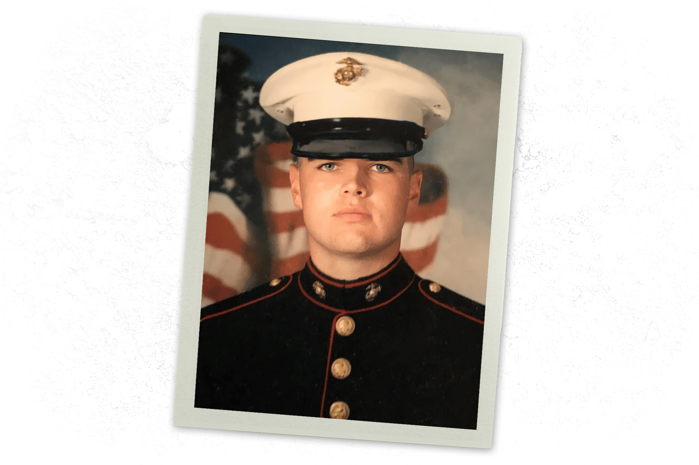

Middletown 童年、海军陆战队与耶鲁——创伤如何锻造了一个政治人物的信念内核
2005年深秋，伊拉克西部安巴尔省的阿萨德空军基地。一个名叫 James David Hamel 的21岁美国海军陆战队下士，背着步枪和笔记本，站在伊拉克宪法公投的投票站外面。他正在读纳坦·夏兰斯基（Natan Sharansky）的《论民主》（The Case for Democracy），一本被小布什政府奉为圭臬的著作。但眼前的伊拉克人并不像书里写的那样渴望民主——他们只想要一个安全的国度。几个月后，副总统迪克·切尼飞抵基地视察，一个年轻士兵斗胆问他局势是否真的"一切向好"，切尼微笑着说："嗯，伊拉克看起来很不错。"那天夜里，Hamel 在日记里写下了他对美国政府的第一次深层怀疑。
七年后，他改名 J.D. Vance，从耶鲁法学院毕业，成为彼得·蒂尔（Peter Thiel）的门徒，写了一本定义一代人政治想象力的回忆录。再过八年，他站在华盛顿的宣誓台上，成为美利坚合众国第50任副总统。
这个故事的核心不是"穷小子逆袭"。而是一个人在混沌的童年中目睹了"习得性无助"如何吞噬一个家庭、一个社区，然后在海军陆战队的纪律中找到了解药，又在耶鲁的精英世界里重新审视这套解药的局限。他对"勤劳与懒惰"的执念、对"文化衰败"的诊断、对精英阶层的不信任，都可以追溯到这三个地点：Ohio的Middletown（Middletown）、North Carolina的切里波因特（Cherry Point）和Connecticut的纽黑文（New Haven）。
J.D. Vance 的第一张出生证明上写着的名字是 James Donald Bowman，1984年8月2日出生于Ohio巴特勒县的Middletown。名字里的 "Donald" 来自他的生父 Donald Bowman——一个在他蹒跚学步时就离开家的男人。这个姓氏在他六岁时消失了。母亲贝弗利（Beverly）嫁给了她的第三任丈夫鲍勃·哈梅尔（Bob Hamel），鲍勃收养了年幼的 JD。贝弗利把他的中间名从 "Donald" 改成了 "David"（她叔叔的名字），以保留 "J.D." 这个昵称，同时抹去生父的痕迹。Vance 后来写道："This seemed a bit of a stretch even when I was six. Any old D name would have done, so long as it wasn't Donald."（"即使在我六岁的时候，这也觉得有点牵强。随便什么以 D 开头的名字都行，只要不是 Donald。"）[注1]
他的第三次改名发生在2013年，那时他已经从耶鲁法学院毕业。母亲和养父鲍勃·哈梅尔离婚后，外祖父母成为了他事实上唯一的依靠。他把姓改成了外祖母 Bonnie Vance 的娘家姓——Vance。他告诉《纽约时报》，这是为了致敬那个在他生命中最黑暗的时刻拉了他一把的人。2022年参议员竞选期间，他正式将 "James David" 缩写为 "J.D."。
三次改名，三个家庭，三种身份。一个关于"缺失"的故事被刻在了名字里：生父缺席，母亲不断更换的丈夫，外祖父母成为最终的避风港。
在社交媒体上，这种不断重塑身份的模式引发了不少质疑。Twitter 用户 @joni_askola 在2026年2月写道："JD Vance changed his name, his religion, and his entire political ideology to become the exact avatar his billionaire backer Peter Thiel required. When a politician reinvents their identity to serve an oligarch, they are an asset."（"JD Vance 改名、改宗、改掉了整个政治意识形态，只为成为他的亿万富翁金主 Peter Thiel 所需的精准化身。"）这条推文获得了超过31000次点赞和9000多次转发[注2]。而白人至上主义者 Nick Fuentes 则从另一个极端发难："So where does JD Vance actually come from? ... created in a petri dish by David Frum and Peter Thiel."（"所以 JD Vance 到底是从哪儿来的？……是在 David Frum 和 Peter Thiel 的培养皿里制造出来的。"）[注3]
这些攻击——无论来自左翼还是极右翼——都指向同一个脆弱点：Vance 身份的可塑性。但这种可塑性本身，恰恰是铁锈带原生家庭的产物。当一个孩子在成长中不断更换父亲、不断搬家、不断适应新的家庭结构时，"身份"从一开始就不是固体的，而是液态的。
Middletown坐落在代顿（Dayton）和辛辛那提（Cincinnati）之间，人口约五万一千人。这座城市的命运曾经与 AK 钢铁公司（前身是 Armco）深度绑定——那是战后阿巴拉契亚移民北上的目的地，也是 Vance 的外祖父母 Bonnie 和 James Vance 在二战后从Kentucky的杰克逊县（Jackson, Kentucky）迁来的理由。他们属于那场"阿巴拉契亚大迁徙"（Great Migration）的一部分：苏格兰-爱尔兰裔的山地家庭离开贫穷的家乡，到工业城市寻找钢铁厂的工作。
但到 Vance 童年的1990年代，那座工厂已经不再是希望之锚了。Vance 将Middletown描述为一个"主要由低收入居民组成的小镇，对许多有阿巴拉契亚根基的家庭而言，'贫穷是一种家族传统'"。（"poverty was a family tradition"）[注4]
家中的景象比街区的衰败更令人窒息。
他的母亲贝弗利是一名护士，这份工作给了她接触处方药的便利——也给了她长达十五年药物成瘾的深渊。她结过五次婚，Vance 用了一个精准的比喻来形容自己的童年："Of all the things I hated about my childhood, nothing compared to the revolving door of father figures."（"在我童年所有让我痛恨的事情中，没有哪件比得上那扇旋转门——父亲们不断进出。"）[注5]
在他十二岁那年，贝弗利在一次驾车事件中被捕。她加速行驶，威胁要将车撞毁，杀死他们母子两人。Vance 跳下车，跑到邻居家求救报警。多年后他告诉梅根·凯利（Megyn Kelly）："In that moment I just felt relieved and I thought to myself, 'Alright I'm going to live another day.'"（"在那一刻我只是感到如释重负，心里想着，'好吧，我又能多活一天了。'"）[注6]
Vance 后来在耶鲁法学院期间，母亲因海洛因过量而倒下。一个当了护士的母亲，因为触手可及的处方药和逐渐恶化的海洛因成瘾，最终沦为病床上的躯体。Vance 在《乡下人的悲歌》中写道："Addictions based on grim future without hope."（"成瘾，源于没有希望的灰暗未来。"）[注7]

Bonnie Blanton Vance，一个没有受过高等教育但有着钢铁般意志的阿巴拉契亚女性。她和丈夫 James Vance（Papaw）在二战后从Kentucky的布雷塞特县（Breathitt County）来到Ohio。Vance 称他们 "without question or qualification, the best things that ever happened to me"（"毫无保留地说，是我一生中遇到过的最好的事情"）[注8]。
Mamaw 信仰耶稣，喜欢比利·格雷厄姆（Billy Graham）的布道，但厌恶"有组织的宗教"。当大约十岁的 Vance 问她"上帝爱我们吗？"的时候，她哭了[注9]。这个场景在日后 Vance 的宗教信仰转变中反复出现——一个在混乱中寻找意义的孩子，和一个无法给出神学答案但从不缺席的爱他的外祖母。
当贝弗利的行为变得难以忍受时，Vance 被安置在外祖父母家中。Mamaw 严厉但充满爱意——有一次，Vance 和一群朋友在外面胡闹时撞坏了她的车，她从正在治疗肺炎的医院里自行出院，只为把他带回家。她告诉他："Someone will need to care for the family when she is gone, and that he has the choice to make something of himself."（"当她不在了，总得有人照顾这个家，而他有选择让自己出人头地。"）[注10]
Vance 后来在2022年参议员胜选演讲中说："You're not always going to agree with every vote that I take...but I will never forget the woman who raised me."（"你们不会总是赞同我的每一次投票……但我永远不会忘记抚养我长大的那个女人。"）[注11]
Mamaw 的存在至关重要，不仅因为她提供了稳定的家庭环境，更因为她代表了 Vance 世界观中"勤劳vs懒惰"二元对立的原型。Mamaw 是那个从Kentucky山区走出来、在钢铁厂旁的工人阶级社区里咬牙撑起一个家的女人。她不谈论"系统性不公"或"结构性贫困"——她只谈论"你有没有选择"。这种思维方式，日后成为了 Vance 对铁锈带贫困问题诊断的核心框架。
2024年，在共和党全国代表大会上，Vance 公开庆祝母亲贝弗利终于实现了长期戒毒。她在康复后以"一个关于成瘾、希望、救赎的故事"为题公开演讲。2025年9月，时任副总统的 Vance 在白宫罗斯福厅为她举办庆祝戒瘾里程碑的活动[注12]。这个结局看似温暖，但它掩盖了一个更深层的问题：Vance 将母亲最终的成功归因于个人意志，而非任何制度性的支持。这种归因方式——个体的选择高于结构的力量——贯穿了他的整个政治生涯。
2003年4月，伊拉克战争爆发一个月后，18岁的 James David Hamel 走进了Middletown的征兵办公室。陪他去的是他年长的表姐 Rachael——一名前海军陆战队员。他原本计划去Ohio立大学，但高中成绩平平加上混乱的助学贷款文件让他打消了念头。
家里大多数人强烈反对他参军。但这个决定——与其说是爱国主义驱使，不如说是一种逃离——将他从Middletown的混乱中连根拔起，投进了帕里斯岛（Parris Island）那座塑造人格的熔炉。
他在体能测试中得分足够高，被分配为公共事务（Public Affairs）专业的海军陆战队员。2004年7月，他被派往North Carolina东部的 切里波因特海军陆战队航空站（MCAS Cherry Point），隶属第二海军航空联队，军衔为下士（Corporal, E-4）[注14]。
在切里波因特的那些日子里，Vance 的战友们记住的是一个格格不入的形象：
一个来自铁锈带底层的孩子，在海军陆战队的营房里读着《经济学人》和安·兰德，思考着自由市场和个人主义。这本身就是一种矛盾——一个被命运抛入底层的人，却正在吸收一种将贫困归咎于个体的意识形态。
2005年8月，Vance 被部署到伊拉克西部 阿萨德空军基地（Al-Asad Airbase），担任随军记者（combat correspondent），为期六个月[注16]。
这是一个微妙的位置。他没有深入前线——他的任务是跟随部队，为军事出版物和当地报纸撰写简短的报道。基地本身在伊拉克标准下算是安全的——被戏称为"杯糕营"（Camp Cupcake），因为有汉堡王和必胜客。但迫击炮袭击司空见惯。
最关键的体验发生在2005年底。伊拉克正在举行宪法公投和议会选举，Vance 被派去为投票站提供安全保障。他手里拿着夏兰斯基的《论民主》，而眼前的伊拉克人"并不太关心民主……他们只想要一个安全的国度"。这个落差——精英的宏大叙事与底层民众的朴素需求之间的鸿沟——日后成为了 Vance 政治哲学的基石。
但有一个更深层的问题值得注意：Vance 在伊拉克并没有参与实际战斗。 他承认了这一点[注18]。这意味着什么？一个日后对"forever wars"持怀疑态度的政客，他的反战立场并非来自创伤后应激障碍或战场的血腥记忆，而是来自一种更冷静的观察——他看到了华盛顿的叙事与巴格达现实之间的断裂。切尼的那句"Iraq's looking good"，对于一个在基地里亲历混乱的年轻士兵来说，不仅仅是一句政治口号，而是一种背叛。
Vance 在《乡下人的悲歌》中引入了一个关键的心理学概念：习得性无助（learned helplessness）。这个由马丁·塞利格曼（Martin Seligman）在1960年代通过狗的实验提出的概念，描述了当个体反复经历不可控的负面事件后，即使后来有机会改变处境，也会放弃尝试的现象。
Vance 将这个概念应用于理解铁锈带的贫困。他的论点是：Middletown的很多家庭不仅在经济上贫困，更在精神上瘫痪——他们不再相信自己能够改变命运。不是因为他们不够聪明或不够勤劳，而是因为一代又一代的失败教会了他们"努力也没有用"。
海军陆战队治愈了他的"习得性无助"。他在回忆录中写道，四年的军旅生涯"cured what he called a 'crushing case of learned helplessness'"（治愈了他所称的"压倒性的习得性无助"）[注20]。军队教给了他实用技能——如何管理支票簿、如何理财、如何以成年人的方式行事——更教给了他一种信念：行动可以改变结果。
这个心理学框架是理解 Vance 的钥匙。它解释了为什么他后来将贫困问题主要归因于"文化"而非"制度"——因为在他的个人经验中，改变确实来自内部的觉醒，而非外部的干预。Mamaw 没有给他一个政府项目，她给他的是一种信念；海军陆战队没有给他一个经济刺激计划，它给他的是纪律。
但批评者指出，这个框架有一个致命的盲点。它将系统性问题——去工业化、阿片危机、教育资源匮乏——简化为了个人心态问题。 阿巴拉契亚地区的活动家和学者们指出，Vance 忽略了以下事实：当 AK 钢铁厂裁员时，"习得性无助"不是原因，而是结果；当制药公司用奥施康定（OxyContin）淹没小镇时，"文化衰败"不是根源，而是症状。
这个争论——贫困是文化问题还是结构问题——日后成为了美国政治中最深刻的分歧之一，而 Vance 站在了"文化论"这一边。
从海军陆战队退役后，Vance 在服役期间就开始修读的在线大学课程积累够了学分。2009年，他以政治学和哲学双学士学位从Ohio立大学毕业[注21]。
他申请了耶鲁法学院并被录取——这是命运的又一个转折。在纽黑文，三个人的出现将彻底改变他的轨迹。
Amy Chua，以《虎妈战歌》（Battle Hymn of the Tiger Mother）闻名的法学教授，成为 Vance 的导师。Chua 鼓励他写回忆录，最终成为了《乡下人的悲歌》的"教母"——Vance 后来称她为"authorial godmother"（文学教母）[注22]。Chua 还撮合了 Vance 和乌莎（Usha Chilukuri）的恋情，称他们是"极其不可能的一对，几乎是性格上的对立面"[注23]。
Usha Chilukuri Vance，1986年出生于CaliforniaSan Diego County，泰卢格婆罗门印度裔美国人，父母是1980年代从Andhra Pradesh（Andhra Pradesh）来到美国的移民——父亲是印度理工学院马德拉斯分校毕业的机械工程师，母亲是加州大学San Diego分校的分子生物学教授。她以最高荣誉（Summa cum laude）从耶鲁大学本科毕业，获得剑桥大学克莱尔学院的硕士学位，之后进入耶鲁法学院[注24]。
两人于2014年6月14日在Kentucky举行了跨宗教婚礼——J.D. 的朋友 Jamil Jivani 朗读圣经，一位印度教祭司为这对新人祈福。他是无神论者（后来于2019年皈依天主教），她是印度教徒，他们决定以基督教方式抚养孩子[注25]。
Peter Thiel，硅谷亿万富翁投资人，是第三个关键人物。Thiel 来耶鲁法学院做了一次关于技术停滞的演讲，主张精英专业人士被困在社会经济阶梯上攀爬，牺牲了真正的幸福。这次演讲给 Vance 带来了巨大的冲击。Thiel 将他引荐给了法国哲学家勒内·吉拉尔（Rene Girard）的思想——尤其是基督教如何超越替罪羊神话的论述。Thiel 还成为 Vance 风险投资生涯的引路人，资助了他的基金 Narya Capital，并最终向支持他竞选参议员的超级政治行动委员会注入了1500万美元[注26]。
Twitter 用户 @NickJFuentes 以其一贯的讽刺语调总结了这种关系。这条推文获得了超过15000次点赞[注27]。而 @JasonBassler1 更是列出了 Vance 依赖 Thiel 的"五大证据"[注28]。
这些批评并非没有道理，但它们忽略了一个更深层的悖论。Vance 在耶鲁的经历不仅仅是被 Thiel"收编"——他也在耶鲁完成了对自身经历的系统性反思。与乌莎一起，他组织了一个讨论小组，主题是"白人美国的社会衰落"（social decline in white America）[注29]。这个讨论组是他日后写作《乡下人的悲歌》的思想实验室。
2013年，他从耶鲁法学院毕业，先后在 Sidley Austin 律师事务所和旧金山的一家律所工作，然后转入 Thiel 的 Mithril Capital 担任投资主管，最终创办了自己的风投公司 Narya Capital。
这句话概括了他在Middletown的童年留下的永久烙印。海军陆战队教会了他纪律，耶鲁给了他知识，乌莎给了他一个稳定的家庭——但那颗"延迟的炸弹"从未被完全拆除。它只是被重新校准了方向：从一个可能在毒品和暴力中自我毁灭的铁锈带青年，变成了一个将童年的创伤转化为政治燃料的意识形态战士。
他对奥巴马的反应是一个有趣的例证。在2017年1月，也就是奥巴马即将卸任时，Vance 在《纽约时报》上写了一段出人意料的温和文字："At a pivotal time in my life, Barack Obama gave me hope that a boy who grew up like me could still achieve the most important of my dreams. For that, I'll miss him, and the example he set."[注31]
但在《乡下人的悲歌》中，他也承认了铁锈带对奥巴马的复杂情感："Barack Obama strikes at the heart of our deepest insecurities. He is a good father while many of us aren't. He wears suits to his job while we wear overalls... His wife tells us that we shouldn't be feeding our children certain foods, and we hate her for it — not because we think she's wrong, but because we know she's right."[注32]
这两段话之间的张力——感激与怨恨、认同与疏离——正是 Vance 政治人格的核心张力。他是一个从底层走出来的人，既理解底层的痛苦，又无法原谅底层的自我毁灭。他敬佩那个实现了"美国梦"的黑人总统，又深知自己的白人工人阶级社区之所以支持特朗普，部分原因正是这种"被精英说教"的屈辱感。
当 Vance 离开耶鲁、进入硅谷的风投世界时，他随身携带着两个行李箱：一个装着Middletown的记忆——药物的气味、Mamaw 的 stern love、旋转门般的父亲们；另一个装着海军陆战队和耶鲁赋予的分析框架——"习得性无助"、个人责任、精英叙事与底层现实的鸿沟。
2016年，在 Amy Chua 的鼓励下，这些行李箱被打开了。《乡下人的悲歌：一个家庭和一个文化危机的回忆录》（Hillbilly Elegy: A Memoir of a Family and Culture in Crisis）于2016年6月28日由 HarperCollins 出版，264页，最终销量超过300万册[注33]。
这本书将他从一个默默无闻的风投投资人变成了一个国家性的文化符号。它被保守派视为理解白人工人阶级的"圣经"，被进步派批评为"将福利国家的迷思重新包装为白人工人阶级的入门读物"（Sarah Jones 语）[注34]。它成为了理解2016年大选最常被引用的"解释"之一。
但更重要的是，这本书让 Vance 发现了一个他从未想象过的可能性：Middletown的痛苦不仅是一段需要被治愈的个人创伤，也是一种可以被转化、被叙事、被政治化的资源。
从铁锈带之子到耶鲁毕业生，从海军陆战队员到硅谷投资人，从回忆录作者到美国副总统——每一步都建立在上一步的废墟之上。但那些废墟，从未被清理干净。